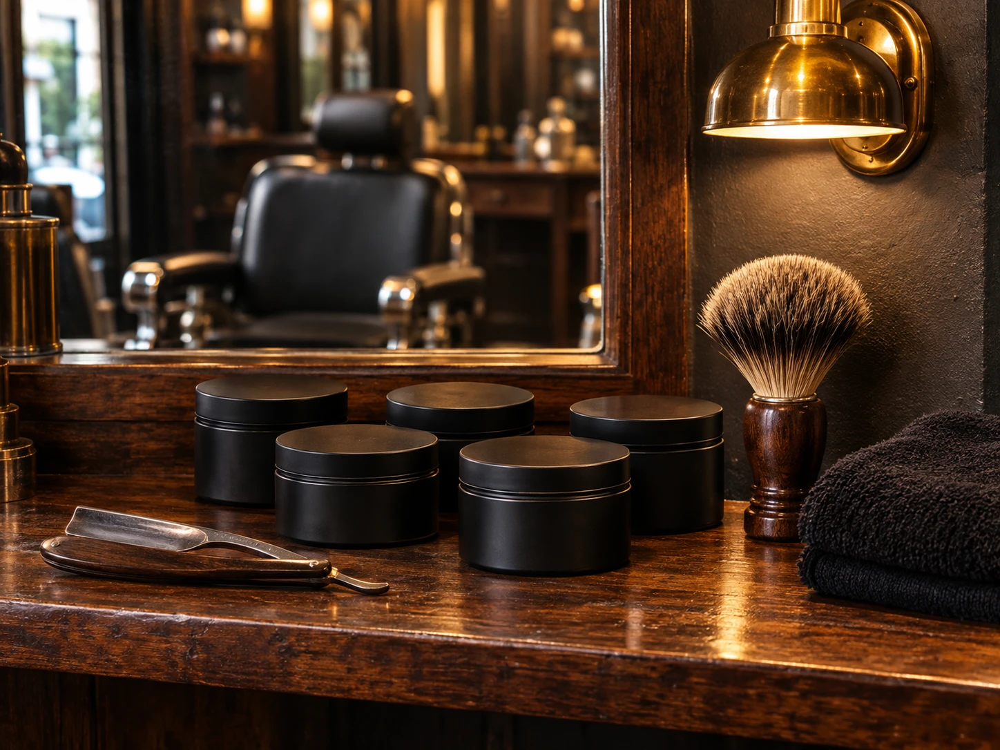
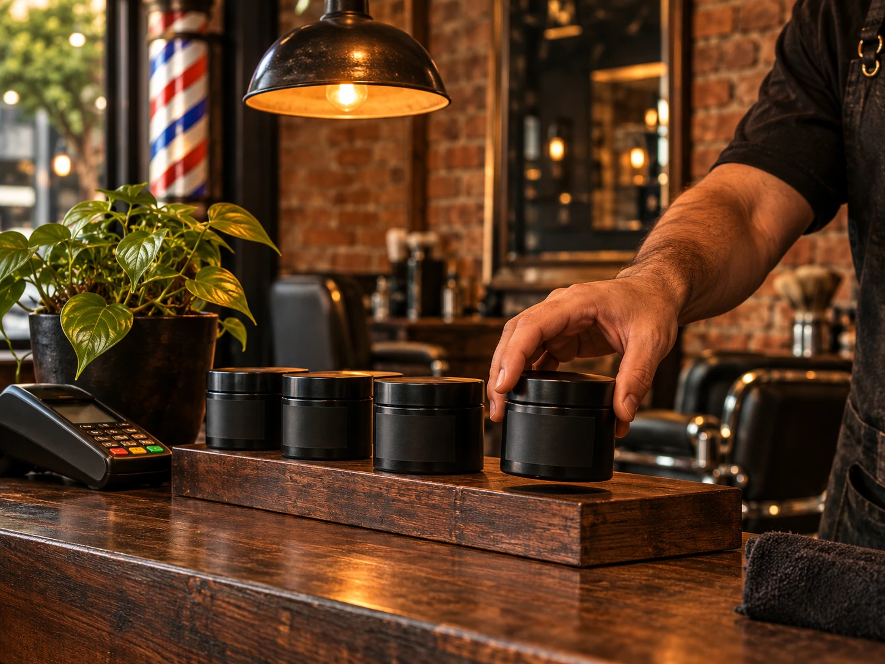
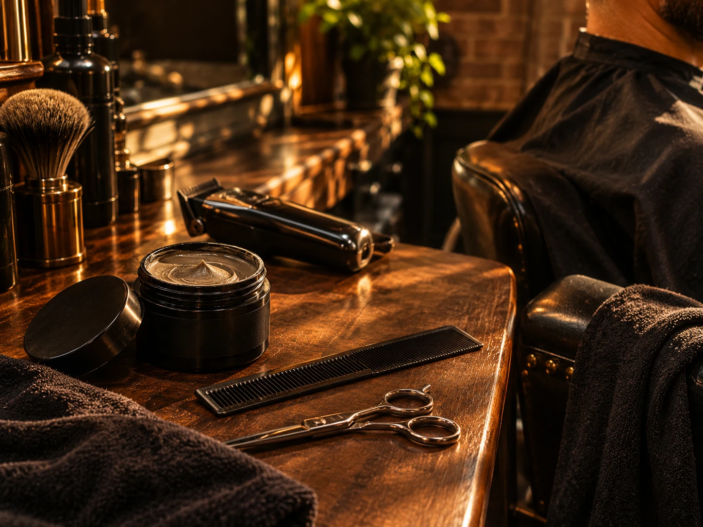

01 · Logotipo
1
Barbearias e salões · São Paulo capital
Monte o pote com o nome da sua casa, venda e ganhe renda extra, e acompanhe tudo na Suíte UP. Para barbearias e salões de São Paulo capital.
Tudo num só lugar
Cada área terá a sua página. Você começa pelo pote e liga o resto quando fizer sentido.
Monte o pote com a sua marca no simulador 3D, feche pelo WhatsApp e receba o lote de unidades em até dias*.
Ver como funciona → DisponívelArgila, pasta, gel, efeito molhado, fibra e cera black.
Ver os estilos → ProtótipoLogotipo, cores, rótulo e a linha inteira com o nome da casa.
Abrir o estúdio → ProtótipoMarca própria e mais de 30 itens para a bancada, num carrinho só.
Ir à loja → ProtótipoPosts prontos com a sua marca, materiais de balcão e mensagens.
Ver o kit → ProtótipoPedidos dia a dia, estoque da linha e vendas da lojinha.
Abrir painel → ProtótipoCursos em quatro trilhas: gestão, marketing, branding e técnicas de corte e barba.
Ver os cursos → HipóteseQuanto cada pote vendido pode deixar na barbearia.
Fazer a conta → Em adaptaçãoSistemas e BI da UP Co. adaptados para barbearias.
Saber mais →* Lote mínimo e prazo dependem da confirmação da fábrica.
Private label · como funciona
Escolha o pote e a tampa e suba a sua arte, ou comece por um logotipo base. Você vê o resultado antes de pagar.
A IA responde na hora e a equipe confirma arte, quantidade e entrega com você.
unidades com a sua marca em até dias*, prontas para vender.
* Lote mínimo, etapas e prazo dependem da confirmação da fábrica.
Simulador 3D
Gire, troque o acabamento e coloque a sua arte. Quando ficar do seu jeito, é só mandar para a equipe.
Linha de pomadas
Da argila seca ao gel espelhado. Escolha quais entram na sua linha: a massa muda no pote na hora.
Fragrâncias e lote mínimo de cada estilo: amadeirada, cítrica ou neutra · 150 potes por estilo.
Ainda não tem logotipo?
Escreva o nome da barbearia, escolha um estilo e veja na hora como ele fica no pote.
Isto é um rascunho automático. No projeto real, um designer gráfico especializado em marcas revisa, ajusta e finaliza o seu logotipo com você antes de ir para a produção.
O que vem junto
Além do pote, você recebe o brandbook da sua marca: o guia com logotipo, cores, tipografia e aplicações para usar no balcão, no Instagram e na fachada.
ABCDEFGHIJKLMNOPQRSTUVWXYZ 0123456789
Prévia montada automaticamente a partir das suas escolhas. O brandbook final é feito pelo designer.
O registro é feito no INPI e depende da análise do órgão: ninguém pode garantir a aprovação. Antes do pedido, é feita uma busca para ver se já existe marca parecida.
Renda extra
Hipótese · a confirmarBarbearias piloto: 3 casas em Pinheiros, 41 potes vendidos no 1º mês
Sistemas e BI
Em adaptaçãoA Suíte da UP Co., com 11 módulos, está sendo adaptada para barbearias e salões. A ideia: pedidos, vendas e resultados da casa num só painel, com os números que ajudam a decidir.
Marketing
Em definiçãoTer o produto na prateleira é metade do caminho. Ajudamos a casa a divulgar e a atender quem pergunta.
Quem já usa

“Os potes ficam na prateleira atrás da cadeira e o cliente pergunta sozinho. No primeiro mês vendi mais do que esperava.”

“Ter o nome da barbearia no pote mudou a conversa: o cliente leva e ainda marca o perfil da casa no Instagram.”

“Eu já usava a pomada no corte. Agora ela também vira renda extra no balcão, sem eu precisar de estoque grande.”
O lote inicial é de unidades por produto. [CONFIRMAR COM A FÁBRICA]
Até dias depois da aprovação da arte, com cada etapa visível no painel do pedido. [CONFIRMAR COM A FÁBRICA]
Não. Você parte de um logotipo base e coloca a sua marca no simulador; um designer finaliza antes da produção.
[RESPOSTA DEPENDE DO MODELO REGULATÓRIO: FABRICANTE TITULAR OU NOTIFICAÇÃO POR MARCA]
Fábrica parceira, com entrega direta na barbearia em São Paulo capital. [FÁBRICA, LOCAL, PRAZO E CUSTO DE ENTREGA]
Entrada para iniciar a produção e o restante na entrega. [CONDIÇÃO E FORMA DE PAGAMENTO]
Está em adaptação para barbearias e salões. [PREVISÃO]
Fale com a equipe no WhatsApp. A IA tira as dúvidas na hora e uma pessoa da equipe acompanha o seu pedido do começo ao fim.
Número do WhatsApp: (11) 90000-0000 · botão desligado na demonstração